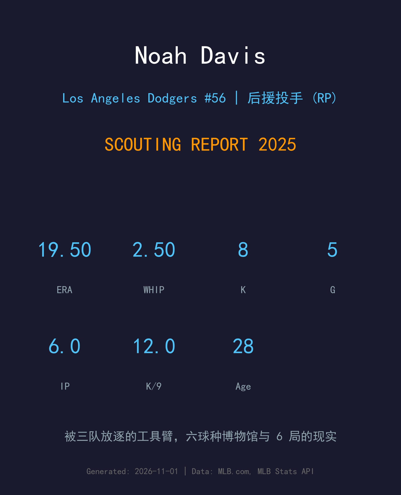
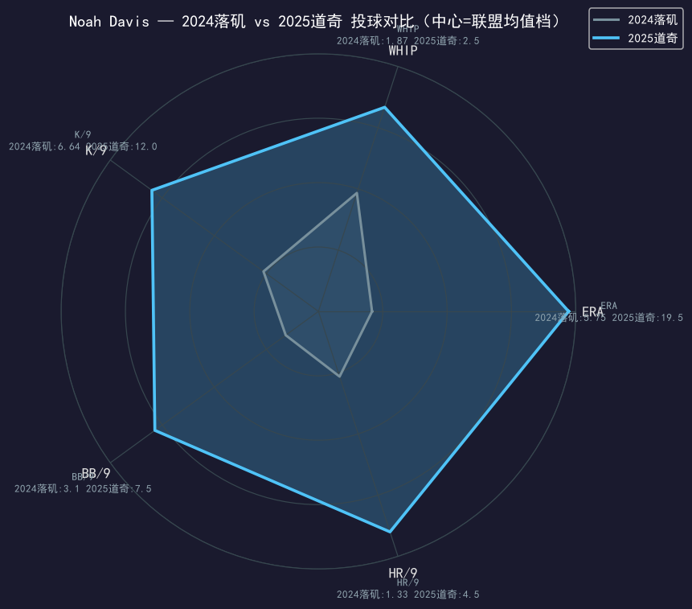
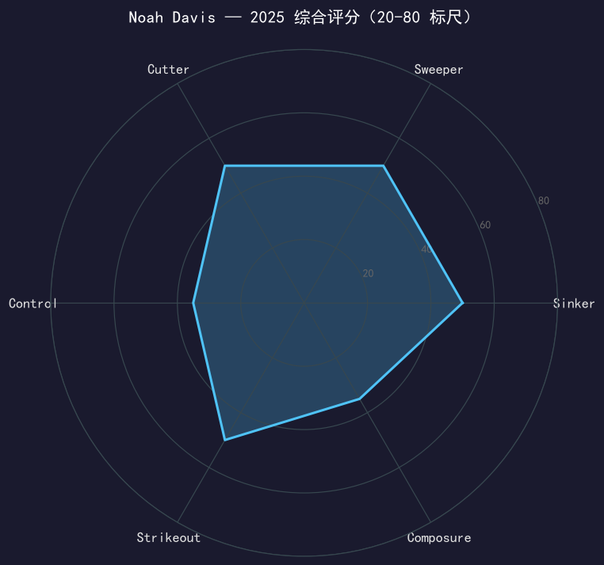

Los Angeles Dodgers #56 | 后援投手 | 右投 | 被三队放逐的工具臂，六球种博物馆与 6 局的现实

Noah Davis 的 2025 年很短，也很残酷：3 月 27 日道奇用现金从红袜把他买来，6 月被叫上大联盟——5 场出赛、自责分率 19.50、WHIP 2.50，7 月 5 日被下放，7 月 11 日被指定让渡，7 月 14 日被送到双城；在明尼苏达再投 4 场 16.20 之后，他的 2025 年提前落幕。
但这份数据表掩盖了一个有趣的事实：他的 6 局里有 8 次三振（K/9 12.0），而且他是一位罕见的「六球种博物馆」——伸卡、横扫滑、卡特之外，他甚至会在比赛中零星投出蝴蝶球级别的螺旋球（Screwball）。触球和控球（5 保送、10 安打、3 轰）跟不上球种的数量，是这个 28 岁工具臂的核心矛盾。
从 2025 年 11 月的视角看，Davis 是全联盟 roster 边缘化的标准样本：有 stuff、有多球种想象力、没有一处球队愿意多给他 20 局来证明自己。他的下一站在哪，可能取决于哪支球队的 3A 牛棚需要一个「什么局都能投两局」的填充臂——以及他自己能不能在春训里把保送和全垒打同时压下去。
10 月 5 日在科罗拉多落矶登上大联盟——加州新港滩出身的他在落矶山的稀薄空气里完成了首秀，虽然 1 局失 2 分，但那是梦想成真的夜晚。
道奇用现金从红袜买入他，是 2025 年对他最大的信任票：6 月的 5 次登板里他三振了 8 名打者，但 19.50 的自责分率让这段机会只持续了三个星期。
以下为道奇段数据（2025-03-27 自红袜购入、2025-07-14 交易至双城）：

| 赛季 | 球队 | G | ERA | WHIP | IP | SO | BB | K/9 | BB/9 |
|---|---|---|---|---|---|---|---|---|---|
| 2024（落矶） | COL | 9 | 5.75 | 1.87 | 20.1 | 15 | 7 | 6.64 | 3.10 |
| 2025（道奇段） | LAD | 5 | 19.50 | 2.50 | 6.0 | 8 | 5 | 12.00 | 7.50 |
| 2025（双城段） | MIN | 4 | 16.20 | 2.60 | 5.0 | 7 | 1 | 12.60 | 1.80 |
2025 年的 Davis 有一个极其罕见的数据指纹：三振率暴涨（6.64→12.00→12.60）的同时，自责分率也暴涨（5.75→19.50→16.20）。这说明他的球威在变好，但每一颗坏球都被打者用全垒打（全年 7 轰）或连续安打惩罚。这是「边缘牛棚臂被大联盟打者无限放大」的标准结局——大联盟给了 11 局的耐心，他用 12.9 的三振率证明自己能三振大联盟打者，也用 18.00 的自责分率证明为什么球队不敢再给第 12 局。
2025 赛季真实配球数据（MLB Stats API pitchArsenal，全季道奇+双城汇总）：
使用率第一的配球地基，沉球诱导滚地球；问题是进垒点偏高时会被扛成全垒打——2025 年 3 轰里有 2 轰来自伸卡。
大幅横移的两好球武器，是他 12.0 K/9 的主要来源；落点控制仍是问题。
细小横移的过渡球种，对付左打者的 inner-half 工具。
抢好球用的直上版本，球速尚可但缺乏尾劲差异化。
全大联盟近乎绝迹的球种！左投的经典武器在他右手上零星复活——即便只占 2.8%，也是他「博物馆」绰号的来源。
零星点缀的垂直变化球，用来改变打者视线节奏。
Davis 是 2025 年「三振率与自责分率同向暴涨」现象的最佳案例：K/9 12.0 意味着他的球能骗过大联盟打者的挥棒，但 19.50 的自责分率意味着每一次没骗到都会被重罚。对边缘牛棚来说，这种 profile 没有中间地带——要么把 HR/9 从 4.5 压到 1.5 以下成为可用的长中继，要么继续在 waiver 线上流浪。棒球对不同错误的价格表一向如此残酷。
一个 28 岁的后援拥有伸卡、横扫滑、卡特、四缝线、螺旋球、滑球、曲球七张牌——这在数据时代几乎是反潮流的：现代牛棚开发讲究「两颗球练到极致」。Davis 的多球种更像发展体系辗转（红袜→洛矶→红袜→道奇→双城）留下的层积岩：每到一个新环境就被建议加一颗球，结果没有一颗练到精英。对他而言，减法比加法可能是唯一的生路。
道奇 3 月 27 日用现金买他、7 月 14 日把他送去双城——这两笔交易之间只有三个半月，却是边缘投手的完整生命周期：被需要、被检验、被放弃。他 2025 年在两支球队合计 11 局、自责分率 18.00，这个数字会跟着他进入每一个春训的球探报告首页。要撕掉这页纸，他需要在一个地方待满一整年。

六球种博物馆的末路或重生
C 级 / roster 边缘工具臂
道奇 2025 季后赛夺冠之路：外卡 2-0 红人 → NLDS 3-1 费城人 → NLCS 4-0 酿酒人 → 世界大赛 4-3 多伦多蓝鸟。
Davis 与这条夺冠路无关：7 月 14 日他已被送去双城，而双城那年没有进入季后赛。他的 2025 年在 9 月底就结束了——连续第二年，他在场外观看了整个十月。
Davis 的 2026 年几乎注定从小联盟合约开始：他需要用一整个 3A 赛季证明两件事——保送率能压到 4 以下，以及全垒打能少一半。做到任何一件，他都会重新进入某支大联盟球队的牛棚讨论；做不到，28 岁的他将开始面对「去独立联盟还是去日本」的问题。
理想剧本：3A 完整健康季，年中作为长中继回到大联盟
现实基准：在小联盟与 waiver 线之间度过的一年
上行惊喜：减法配球后异军突起，成为某队牛棚的意外之喜
Noah Davis 来自南加州的新港滩，在当地的高中棒球体系里成名，2018 年选秀进入职业棒球。他的 ascent 路线是典型的「加州右投漂流记」：红袜体系起步，2021 年被交易到科罗拉多落矶，2022 年 10 月 5 日在丹佛完成大联盟首秀。
落矶的三年是边缘投手最艰难的环境：2023 年他先发出赛 6 场、自责分率 8.70，在库尔斯球场被轰得遍体鳞伤；2024 年转任后援稍有起色（5.75），但赛季末被球队放弃。2025 年 3 月 27 日，道奇用现金从红袜把他买回——那是他的家乡球队，也是他生涯离「被需要」最近的一次。
2025 年 11 月的 Noah Davis 手里攥着一份 11 局 18.00 自责分率的成绩单，和一颗连大联盟打者都会挥空的横扫滑球。他的故事还没有到终点——但每一个读过这份报告的球队都会问同一个问题：下一次给他 20 局的机会，他会用减法还是加法来回答？